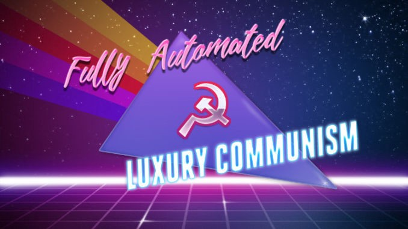

FullY Automated Luxury Communism (FALC)

Internet Meme opperating as a flag for FALC
Info
It starts with a burger.
In 2008 a Dutch professor named Mark Post presented the proof of concept for what he called “cultured meat.” Five years later, in a London TV studio, Mr. Post and his colleagues ate a burger they had grown from animal cells in a laboratory. Secretly funded by Sergey Brin, a co-founder of Google, the journey from petri dish to plate had cost $325,000 — making theirs the most expensive meal in history. Fortunately, the results were promising: Hanni Rützler, a nutrition scientist, concluded that the patty was “close to meat but not as juicy.” The next question was whether this breakthrough could be made cheaper. Much cheaper.
The first “cultured beef” burgers are likely to enter the market next year, at approximately $50 each. But that won’t last long. Within a decade they will probably be more affordable than even the cheapest barbecue staples of today — all for a product that uses fewer resources, produces negligible greenhouse gases and, remarkably, requires no animals to die.
It’s not just barbecues and burgers. Last year Just, a leader in cellular agriculture, cut a deal to start producing one of the world’s tastiest steaks, Wagyu. A company called Endless West, which also makes grapeless wine, has started to produce Glyph, the world’s first “molecular whiskey.” Luxury could be coming to all.
The case of cultured food and drink, far from a curiosity, is a template for a better, freer and more affluent world, a world where we provide for the needs of everyone — in style.
But how do we get there?
To say the present era is one of crisis borders on cliché. It differs from the dystopias of George Orwell or Aldous Huxley, or hell in the paintings of Hieronymus Bosch. It is unlike Europe during the Black Death or Central Asia as it faced the Mongols. And yet it is true: Ours is an age of crisis. We inhabit a world of low growth, low productivity and low wages, of climate breakdown and the collapse of democratic politics. A world where billions, mostly in the global south, live in poverty. A world defined by inequality.
But the most pressing crisis of all, arguably, is an absence of collective imagination. It is as if humanity has been afflicted by a psychological complex, in which we believe the present world is stronger than our capacity to remake it — as if it were not our ancestors who created what stands before us now. As if the very essence of humanity, if there is such a thing, is not to constantly build new worlds.
If we can move beyond such a failure, we will be able to see something wonderful. The plummeting cost of information and advances in technology are providing the ground for a collective future of freedom and luxury for all.
Automation, robotics and machine learning will, as many august bodies, from the Bank of England to the White House, have predicted, substantially shrink the work force, creating widespread technological unemployment. But that’s only a problem if you think work — as a cashier, driver or construction worker — is something to be cherished. For many, work is drudgery. And automation could set us free from it.
Gene editing and sequencing could revolutionize medical practice, moving it from reactive to predictive. Hereditary diseases could be eliminated, including Huntington’s disease, cystic fibrosis and sickle cell anemia, and cancer cured before it reaches Stage 1. Those technologies could allow us to keep pace with the health challenges presented by societal aging — by 2020 there will be more people over the age of 60 than under the age of 5 — and even to surpass them.
What’s more, renewable energy, which has been experiencing steep annual falls in cost for half a century, could meet global energy needs and make possible the vital shift away from fossil fuels. More speculatively, asteroid mining — whose technical barriers are presently being surmounted — could provide us with not only more energy than we can ever imagine but also more iron, gold, platinum and nickel. Resource scarcity would be a thing of the past.
The consequences are far-reaching and potentially transformative. For the crises that confront our world today — technological unemployment, global poverty, societal aging, climate change, resource scarcity — we can already glimpse the remedy.
But there’s a catch. It’s called capitalism. It has created the newly emerging abundance, but it is unable to share round the fruits of technological development. A system where things are produced only for profit, capitalism seeks to ration resources to ensure returns. Just like today’s, companies of the future will form monopolies and seek rents. The result will be imposed scarcity — where there’s not enough food, health care or energy to go around.
So we have to go beyond capitalism. Many will find this suggestion unwholesome. To them, the claim that capitalism will or should end is like saying a triangle doesn’t have three sides or that the law of gravity no longer applies while an apple falls from a tree. But for a better world, where everyone has the means to a good life on a habitable planet, it is an imperative.
We can see the contours of something new, a society as distinct from our own as that of the 20th century from feudalism, or urban civilization from the life of the hunter-gatherer. It builds on technologies whose development has been accelerating for decades and that only now are set to undermine the key features of what we had previously taken for granted as the natural order of things.
To grasp it, however, will require a new politics. One where technological change serves people, not profit. Where the pursuit of tangible policies — rapid decarbonization, full automation and socialized care — are preferred to present fantasies. This politics, which is utopian in horizon and everyday in application, has a name: Fully Automated Luxury Communism.
Sounds good, doesn’t it?
Source
Bastani, Aaron. The World Is a Mess. We Need Fully Automated Luxury Communism. The New York Times. June 11th, 2019